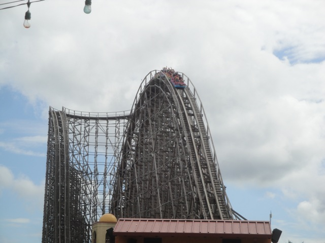

| |
El Toro Review

We're here at Six Flags Great Adventure and today, we're going to be reviewing what is currently the best coaster ever ridden by Incrediblecoasters. I'm not kidding. Out of all the roller coasters we have ever ridden (and we've ridden A LOT. 497 to be exact at the moment, including some of the best in the world), El Toro is currently our favorite. Yes, this wooden coaster is the best roller coaster on Planet Earth. So let's not waste any more time and get on this f*cking thing already. We get in the cars, pull down the lap bars, buckle the seatbelts, and we are off!! We roll around a turn and head up the lifthill. Two things to notice about the lifthill. #1. It's a cable lifthill, much like on Millenium Force. So this thing is quiet and you won't be able to hear the normal *clank, clank, clank* of a lifthill. Second of all, this lifthill is FAST!!! Like Maverick fast. It almost feels like you're being launched up the hill. Which is already quite nice. I enjoy fast lifthills. All right. So we're already at the top. Not much of a view except of New Jersey, though you do get to see Kingda Ka (it's big). All right. Enough is enough. Let's get EJECTED!!! And we dive on down. It's a magnificent first drop. We just dive straight on down, speed pouring on us. It's just wonderful. And that's in the front row. In the back row, you better watch your ass, because it's gonna come out of the seat. =) All right. We're hauling ass now and we roar straight up into another large hill that provides us with some serious ejector air. I'm serious. This hill is much bigger than other major Top 10 Wooden Coasters such as Phoenix and Coaster, and El Toro just PLOWS through it, still having enough speed to throw us up and out of our seats. Just...WOW!!! We drop back down, and get some headchoppers, which I am always a fan of. We rise up another big hill and go down a spiral drop. There's a little bit of airtime here, but it's nothing special. Especially compared to the rest of El Toro, which is just phenomenal. Actually, if I had to point any flaws with El Toro, which is difficult considering how I consider it to be the best coaster I have ever ridden, it'd be this. El Toro has a sort of break. An intermission where the ride stops being crazy and just goes fast. And yeah. El Toro does that. Basically, it temporarily becomes Millenium Force. And yeah. We're in that Millenium Force section. We head up into a sort of spiraly hill that while it certainly looks pretty, this part is kind of...meh. There's no airtime on this hill. Yes, the king of airtime has a moment where there isn't any airtime. Oh well, we'll live. We drop back down into the structure, providing us with some more wicked headchoppers. There's another couple of tiny hills under those headchoppers, but they're really just speed hills. Just little bits for us to shred through. And now, let's get back to the #1 coaster on the planet. Because don't you worry. El Toro still has plenty more raping of insanity to do. Yeah, if you thought El Toro was done and was now gonna be a tame ride, well you've got a rude awakening ahead of you as we go around another turn and head straight into the Rolling Thunder Hill. Also known as the most intense moment of airtime on any coaster anywhere. No seriously. Any airtime you have ever experienced in your life, will be nothing when compared to the Rolling Thunder Hill (Yes, I'm still calling it the Rolling Thunder Hill even though Rolling Thunder is now rightfully demolished). Just...WOW!!! HOLY F*CKBALLS MOTHER OF FLYING SH*T!!! The airtime is so strong you'd think that if it wasn't for this lap bar keeping you in, you'd be flung into orbit. That alone just projects it as one of the best wooden coasters in the world. But El Toro isn't all about airtime and this is where it gets to show off all of its other talents. Laterals. Lots and lots of laterals. No seriously. This is the point of the ride where El Toro goes Maverick on your ass and just starts flinging you around like a rag doll. Just twist after twist after twist. It plants a big old smile on your face And after a few insane laterals, we get back to the good stuff. MORE EJECTOR AIR!!! No seriously, this stuff is like ecstacy on Mars. El Toro then gets creative and begins to offer a unique blend of airtime and laterals through a twisted bunny hops. Some nice airtime. And sadly, we head straight into the brake run from there. Wow. There are no other words for that other than..."Wow". That has got to be the best coaster on the planet and after riding nearly 500 coasters across North America and Europe, that actually means something. And yeah, I will admit that there are some roller coasters that come close, but El Toro is simply the best. Yes, I am one of the few that likes it better than its sister ride in Sweden, Balder. Yes, both are Intamin Pre-Fab wooden coasters and both contain a ton of incredibly strong ejector air. And while I admit that both are incredibly good and Balder is one of the few coasters that can play in the major leagues, I still prefer El Toro. I mean...Rolling Thunder Hill!!! Plus its amazing laterals and first drop. But really, there's no need to fight because whether your favorite wooden coaster is Balder, or Outlaw Run, or some other incredible wooden coaster, we all can agree that El Toro is an amazing ride and (most likely) vice versa with your favorite wooden coaster. So definetly get on El Toro whenever you visit Six Flags Great Adventure. Trust me, you won't be dissapointed. There's a reason it keeps topping our Top 10 Wooden Coasters List. =)
10/10
Location: Six Flags Great Adventure
Opened: 2006
Built by: Intamin
Last Ridden: August 4, 2011
El Toro Photos





Home
|